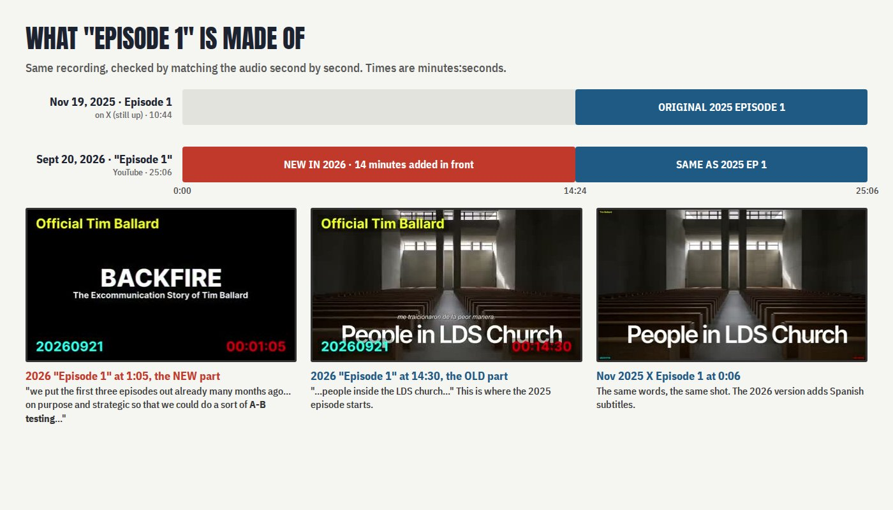

The SRA Loop · Backfire
What "Episode 1" is made of
The "Episode 1" on Tim Ballard's YouTube today is the old Episode 1 from November 2025, with 14 new minutes stuck on the front.

Two versions of Episode 1
| When | Where | Length | |
|---|---|---|---|
| Old Episode 1 | Nov 19, 2025 | X (still up). The YouTube copy is now private. | 10:44 |
| New "Episode 1" | Sept 20, 2026 | YouTube | 25:06 |
How the new one is built
| Part of the new "Episode 1" | What it is |
|---|---|
| 0:00 – 14:24 | New in 2026. An introduction that wasn't in the original. |
| 14:24 – 25:06 | The old November 2025 Episode 1. Same recording, same pictures, now with Spanish subtitles. |
How we know it's the same: we matched the sound of the two versions second by second, and it lines up all the way through. We also compared frames. Only 1.5 seconds was trimmed.
What the new 14 minutes say
The most important line comes about one minute in:
"A lot of you know that we put the first three episodes out already many months ago. That was on purpose and strategic so that we could do a sort of A-B testing and see how people would [react]. The people I was targeting are people who [fell] into the camp of my enemy. So we'd see what they would say so we can defeat it now…" Backfire, Sept 4, 2026 video, ~1:00; also the start of YouTube "Episode 1", Sept 20, 2026
In other words, Ballard says the 2025 episodes were a test run, released to see how his critics would respond.
The new intro also says:
- "This is not about the church… I do not blame the brethren." (the Twelve "were kept in the dark")
- the people who did this are "infiltrators within"
- "the Doug Anderson lie"
What else changed
- The old YouTube links for Episodes 1, 2 and 3 are still on Ballard's own link page (tinyurl.com/TimBallardLinks). All three are now private, so they don't play. An archived copy of the Episode 1 page shows it was public on Feb 12, 2026, with 12,347 views.
- A December 2025 side clip about Celeste Borys (her texts and her lawsuit against Katherine Ballard) isn't in the 2026 version at all.
- Kevin Pearson and Doug Anderson were already named in the original November 2025 Episode 1. They were not added later.
What we still don't know
What the original Episodes 2 and 3 said. Their YouTube copies are private and weren't archived.